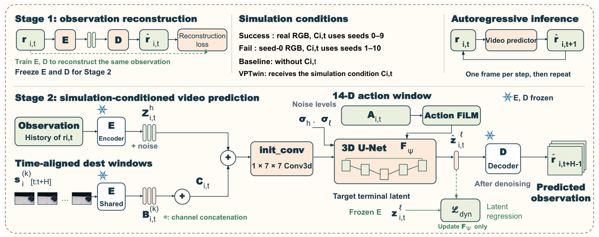
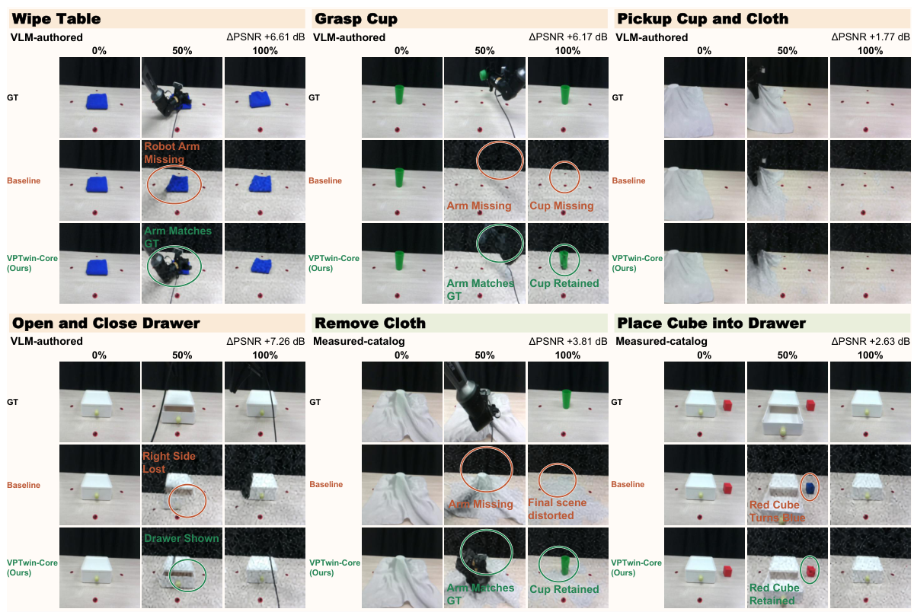

BASELINE
Failed
VPTwin: Real-Sim-Real Video Prediction for Robotic Manipulation Planning
TL;DR: VPTwin anchors real-world video prediction with real-synchronized simulation twins to suppress long-horizon physical hallucinations in robot manipulation planning.
Abstract
While action-conditioned video prediction provides an intuitive world model for robotics, purely data-driven predictors often suffer from compounding errors and physically implausible hallucinations in long-horizon rollouts, severely undermining downstream action planning. We propose VPTwin, a Real-Sim-Real video prediction framework that anchors real-world future prediction using real-synchronized simulation twins. For a target manipulation task, a VLM reconstructs an executable digital twin from a real demonstration episode. To accommodate the ill-posed estimation of unobserved physical properties, Isaac Sim simulates multiple forward dynamic rollouts across randomized physical configurations under candidate action trajectories. Using these rollouts as in-context references, VPTwin harmonizes both domains, using simulation dynamics to enforce physical plausibility while capturing unmodeled contact interactions from real video. Furthermore, we establish a predictive planning loop using VPTwin to visually verify VLM-proposed actions and guide reliable real-world execution. Evaluations show substantial reductions in physical hallucinations during video prediction and marked improvements in manipulation planning performance.
Real-robot demonstrations
Selected hardware executions. SIMPACT failures next to VPTwin successes. Clips are representative, not an exhaustive trial set, and are not frame-aligned.
OURS
Success
VPTwin
Across the five trials, the placed position is randomly shifted within ±1.25 cm along the x- and y-axes.
Overall
| Task | VPTwin | SIMPACT |
|---|---|---|
| Grasp cup | 20/3557.1% · 40.9–72.0% | 9/3525.7% · 14.2–42.1% |
| Open drawer | 20/2580.0% · 60.9–91.1% | 8/2532.0% · 17.2–51.6% |
| Total | 40/6066.7% · 54.1–77.3% | 17/6028.3% · 18.5–40.8% |
Ranges are 95% Wilson intervals.
Grasp cup
| Position | VPTwin | SIMPACT |
|---|---|---|
| Center | 6/101/5 + 5/5 | 0/100/5 + 0/5 |
| Far | 0/5 | 0/5 |
| Near | 10/105/5 + 5/5 | 9/105/5 + 4/5 |
| Left | 4/5 | 0/5 |
| Right | 0/5 | 0/5 |
Open drawer
| Trajectory | VPTwin | SIMPACT |
|---|---|---|
| 1 | 3/5 | 0/5 |
| 2 | 4/5 | 2/5 |
| 3 | 5/5 | 0/5 |
| 4 | 4/5 | 3/5 |
| 5 | 4/5 | 3/5 |
| Total | 20/25 | 8/25 |
Method

A. Real-to-sim
A VLM authors executable twins and physical parameter ranges from a demonstration. Isaac Sim replays the same actions with varied pose, mass, and friction.
B. Predict the real future
Observation history, the 14-D action, and time-aligned simulation rollouts condition VPTwin-Core.
C. Check, then commit
A VLM judges simulation and the predicted video together. Failed candidates are refined up to three times. Hardware runs only after every substage passes.
Inside VPTwin-Core

Two-stage learning. An encoder and decoder are trained on real observations, then frozen. The predictor is trained on actions, observation latents, and concatenated simulation-context latents.
Failure-aware co-training. On Grasp Cup and Open & Close Drawer, 118 real success episodes are paired with 118 synthetic failures. The nominal failed rollout is the failure target; other randomized rollouts are conditioning.
Paper Figure 2. The failure pool covers two task families. The VLM-authored success set covers four.
Video prediction
Simulation context improves full-episode prediction in both twin settings. PSNR is higher-is-better, from paper Table 1.
| Setting | Data | IWS | VPTwin | Gain |
|---|---|---|---|---|
| Measured-catalog twins | 548 episodes · 6 families | 25.58 dB | 28.57 dB | +2.99 dB |
| VLM-authored twins | 277 episodes · 4 families | 25.64 dB | 28.96 dB | +3.32 dB |

Hardware evaluation uses 5 drawer trials and 7 cup trials. Twin authoring assumes calibrated cameras and task-specific reconstruction. Synthetic failures do not cover every real contact.
@misc{xiao2026vptwin,
title={VPTwin: Real-Sim-Real Video Prediction
for Robotic Manipulation Planning},
author={Zhenghao Xiao and Minting Pan and
Nantian He and Dongzhan Zhou and
Yunbo Wang},
year={2026},
eprint={2609.33104},
archivePrefix={arXiv},
primaryClass={cs.RO},
url={https://arxiv.org/abs/2609.33104}
}